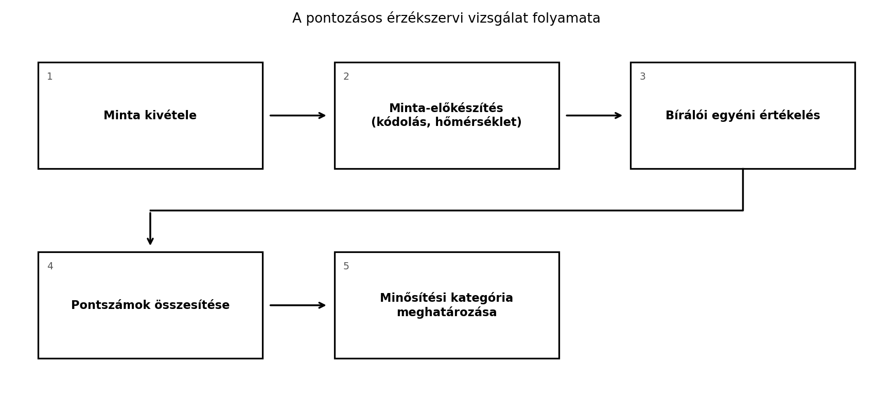

Egy hajnali műszak után a pék kiveszi a kemencéből a vizes kenyeret, megnézi, megtöri, megszagolja, és megkóstolja. Azt mondja: „ma kicsit laposabb a héja, de a bélzete szép.” A műszaktársa ugyanazt a kenyeret másnak látja: „szerintem túl sötét a héj, vissza kellene venni a hőmérsékletet.” Két ember, kétféle benyomás. A vevői reklamáció vagy a gyártmánylapnak való megfelelés igazolása nem alapulhat ilyen szubjektív, egyéni véleményen. Éppen ezért a péknek szabályozott, megismételhető, pontozásos érzékszervi vizsgálatot kell tudnia végeznie: ugyanazt a mintát ugyanolyan feltételek mellett, ugyanazzal a szempontrendszerrel értékelik, így az eredmény összehasonlítható és vitatható esetben is alátámasztható.
A pontozásos érzékszervi vizsgálat nem egyetlen „kóstolás”, hanem több lépésből álló ellenőrzött folyamat. A minta útját az alábbi ábra foglalja össze.

Látható, hogy a bírálók egymástól függetlenül, azonos, semleges körülmények között dolgoznak. A pontszámokat csak az egyéni értékelések után összesítik, így csökkenthető az összebeszélés vagy a tekintélyelv tévedése.
Definíció. Érzékszervi vizsgálat: olyan minőségvizsgálat, amely az ember érzékszerveire (látás, szaglás, ízlelés, tapintás, hallás) támaszkodva értékeli a termék érzékelhető tulajdonságait. A sütőiparban ez a leggyorsabb, legolcsóbb és azonnali döntést lehetővé tevő módszer.
Definíció. Pontozásos minősítés: olyan érzékszervi vizsgálat, amelyben az egyes tulajdonságokat előre meghatározott skálán pontozzák, a hibákért levonás jár, a pontszámokat súlyozással összesítik, majd a végeredményt minősítési kategóriába sorolják.
Definíció. Bíráló: az érzékszervi vizsgálatot végző, megfelelő érzékszervi alkalmassággal és betanítással rendelkező személy. A bíráló lehet a pékség dolgozója, de független, külső bíráló is.
Definíció. Súlyozófaktor: egy szám, amely azt fejezi ki, hogy egy tulajdonság milyen fontosságú a termék megítélésében. A súlyozófaktorok összege 1 (vagy 100%). A nagyobb súlyú tulajdonságnál kisebb hiba is nagyobb pontveszteséget okozhat.
Definíció. Minta-előkészítés: a vizsgálandó termék vagy nyersanyag azon műveletsora, amely biztosítja, hogy a minta minden bíráló számára azonos, felismerhetetlen módon kódolt, megfelelő hőmérsékletű és állapotú legyen.
Az érzékszervi bírálatot lehetőleg külön erre kialakított helyiségben, bírálói fülkékben vagy legalább csendes, semleges környezetben kell végezni.
Előírás. Az érzékszervi vizsgálóhelyiség kialakítására vonatkozó általános követelményeket az MSZ EN ISO 8589 szabvány írja le (ellenőrizendő: a hatályos szabvány pontos száma és címe). A gyakorlatban a következő feltételekre kell figyelni:
Higiénia. A mintaelőkészítő asztal, a vágódeszka, a kés és a tálcák tiszták legyenek. A bíráló kezet mos, mielőtt a mintához nyúl. A vágóeszközöket az allergént tartalmazó és az adott allergént nem tartalmazó minták között el kell mosni, hogy elkerüljük a keresztszennyeződést.
Szabály. A pontozásos bírálathoz legalább 3, lehetőleg 5 vagy 7 bíráló szükséges. A páratlan szám csökkenti a döntetlen szavazás esélyét, de az eredményt mindig az átlagpontszámból számoljuk.
A bírálóval szembeni követelmények:
Higiénia. A bíráló kezét fertőtlenítő szappannal mossa. Hosszú haját fogja össze, ha a mintához nyúl. Fertőző betegség (hasmenés, hányás, gennyes seb) esetén a bíráló nem vehet részt a vizsgálatban.
Allergén. A bírálóknak a bírálat előtt jelezniük kell, ha valamilyen élelmiszerre (például diófélére, szezámra, tojásra) allergiásak, mert akkor az adott mintát nem kóstolhatják, vagy az egész bírálatból ki kell zárni őket.
Szabály. A mintákat úgy kell előkészíteni, hogy minden bíráló azonos állapotú, azonos hőmérsékletű, azonos méretű mintát kapjon, és ne tudja azonosítani, melyik tételből származik.
Lépései:
Figyelem. A mintavágásnál éles kést használunk; a vágás iránya mindig a testtől elfelé mutasson, a vágódeszka csúszásmentes legyen. A kést használat után azonnal tisztítsuk meg.
A pontozásos vizsgálat lényege, hogy a termék érzékelhető tulajdonságait csoportosítjuk, minden csoportra maximális pontot adunk, a hibákért levonunk, majd a kapott pontszámot a gyártmánylapban rögzített kategória szerint minősítjük.
A sütőipari termékeknél általában három fő tulajdonságcsoportot különítünk el:
Ezeket a csoportokat a termék jellegétől függően tovább bonthatjuk.
Szabály. A pontozólap kialakításakor a súlyozást a maximális pontszámok tükrözik. Például egy kenyérnél a külső megjelenésre 20 pont, a bélzetre 40 pont, az illatra-ízre 40 pont adható, így az összpontszám 100. Ez azt jelenti, hogy a bélzet és az íz kétszer olyan fontos, mint a külalak.
A súlyozófaktorok tehát: külső , bélzet , íz-illat . Az összegük . Péksüteménynél a külső megjelenés hangsúlyosabb lehet, finom pékárunál a töltelék és a bevonat is külön pontot kaphat.
Összefüggés. Ha a bíráló az egyes tulajdonságokat külön, 1–10 skálán értékeli, és ismerjük a súlyozófaktorokat, akkor a súlyozott pontszám:
ahol , és az egyes tulajdonságokra adott pontszám.
A gyakorlatban egyszerűbb, ha a pontozólap már eleve 100 pontos, a maximális pontok a súlyokat képviselik. Ekkor csak az átlagot számoljuk.
Előírás. A minősítési kategóriákat és a hozzájuk tartozó pontszámhatárokat a gyártmánylap vagy a vizsgálati utasítás rögzíti. Az alábbi értékek tanulási példák, nem általános előírások (ellenőrizendő: a termékre vonatkozó gyártmánylap, Magyar Élelmiszerkönyv irányelv).
Példa kategóriák:
| Minősítési kategória | Összpontszám (100 pontos skálán) |
|---|---|
| Kiváló | 90–100 |
| Jó | 75–89 |
| Megfelelő | 60–74 |
| Nem megfelelő | 0–59 |
A kategóriahatárok termékenként eltérhetnek, és a gyártmánylapnak kell őket pontosan meghatároznia.
Szabály. A bírálók pontszámai egészek, az átlag viszont lehet tört szám (például vagy ). A besorolás előtt ezért a sávokat folytonosan értelmezzük: kiváló , jó , megfelelő , nem megfelelő . Tehát még „jó”, a még „megfelelő”. Ha a gyártmánylap az átlagot egész pontra kerekíti, azt a vizsgálati utasításnak rögzítenie kell (ellenőrizendő: a gyártmánylap vagy a vizsgálati utasítás szabálya).
Adott: Egy búzakenyeret három bíráló értékelt 100 pontos pontozólapon. A bírálók pontszámai: , , .
Keresett: a kenyér átlagpontszáma és minősítési kategóriája.
Számítás:
Az átlagpontszám pont. A fenti tanulási példa szerinti kategória szerint ez jó (75–89).
Ellenőrzés: A három pontszám átlaga a három érték közé esik, ami hihető. Ha a bírálók között nagy eltérés lett volna, azt külön kell vizsgálni.
Adott: Egy péksüteménynél a bíráló a külső megjelenésre pontot adott a maximális -ből, a bélzetre pontot, az ízre-illatra pontot. A súlyozófaktorok: külső , bélzet , íz-illat .
Keresett: a súlyozott pontszám 10-es skálán, majd százalékban kifejezve.
Számítás:
A súlyozott pontszám 10-es skálán , ami százalékban .
Ellenőrzés: A súlyozófaktorok összege , tehát a számítás helyes. A végső pontszám a bíráló értékeinek súlyozott átlaga, ami a magasabb fontosságú íz miatt közelebb van a -hez, mint a másik kettőhöz.
Megjegyzés. Az általános pontozási keret minden termékcsoportra alkalmazható, de a hangsúlyok és a részletes hibák eltérnek. A következő táblázat a fő termékcsoportok sajátos vizsgálati szempontjait foglalja össze tanulási példaként.
| Termékcsoport | Külső megjelenés kiemelt szempontjai | Bélzet/állomány kiemelt szempontjai | Illat-íz kiemelt szempontjai |
|---|---|---|---|
| Kenyérfélék | alaki szabályosság, héjszín, héjrepedés-mentesség, héjvastagság | pórusozottság egyenletessége, rugalmasság, átsültség, nem ragadós | tiszta, kellemes, a termékre jellemző illat és íz; búzakenyérnél nem savanyú, kovászos rozs-/vegyes kenyérnél enyhén, kellemesen savanyú (a szúrós, túlzott savanyúság hiba); nem élesztős |
| Péksütemények | forma, sérülésmentesség, felület fénye, hintőanyag eloszlása | puha, jól átsült, nem száraz, megfelelő rétegzettség (ha leveles) | jellegzetes íz, megfelelő sózás, idegen íz nélkül |
| Finom pékáruk | forma, bevonat egyenletessége, töltelék látható része, díszítés | omlósság, levelesség, krém állaga, töltelék eloszlása | a töltelék és a tészta íze harmóniája, frissesség |
| Mézeskalács | mintázat tisztasága, szín egyenletessége, felületi fény | törési felület, állomány, nem túl kemény, nem morzsálódik | méz- és fűszerillat, kellemes édes íz |
| Liszt | szín (fehérség, sárgásság), foltok, szennyeződés | tapintás (csomók, szemcsésség), rágási próba | friss gabonaillat, nem dohos, nem savanyú, nem penészes |
Ezeket a szempontokat a gyártmánylaphoz kell igazítani.
A liszt érzékszervi vizsgálata elsősorban a nyersanyag-átvétel és a raktári ellenőrzés része. A péknek gyorsan kell döntenie, hogy a liszt felhasználható-e.
Szabály. A liszt vizsgálata során a következő tulajdonságokat értékeljük:
Higiénia. A lisztvizsgálatnál a mintát tiszta, száraz kanállal vegyük, a kivett lisztet ne tegyük vissza a zsákba. A kéz legyen tiszta. A rágási próbához csak a vizsgálatra szánt kis mintát használjuk.
Eljárás. A liszt érzékszervi vizsgálatának ellenőrzőlistája:
Előírás. Az érzékszervi vizsgálatok általános módszertani kereteit az MSZ EN ISO 13299, a vizsgálóhelyiségek kialakítását az MSZ EN ISO 8589, a bírálók kiválasztását és képzését az MSZ ISO 8586 szabványok rögzítik (ellenőrizendő: a hatályos szabványok pontos számai, címei és kiadási évei). A sütőipari termékek érzékszervi minőségi követelményeit a Magyar Élelmiszerkönyv sütőipari termékekre vonatkozó irányelve és a termék gyártmánylapja határozza meg (ellenőrizendő: a hatályos irányelv pontos száma és címe). A régebbi MSZ 21356:1984 a mézes sütemények vizsgálatára vonatkozott; hatályossága és az esetleges helyettesítő szabvány ellenőrizendő.
Egy kisüzemi pékségben a vevő reklamálta, hogy a kalács bélzete „szalonnás”, tömör. A műszakvezető nem hitt a panasznak, de a gyártmánylap szerint a kalácsnak foszlósnak, rugalmasnak kell lennie. Három betanított dolgozó érzékszervi bírálatot végzett: a kalácsot kódolt mintaként, szobahőmérsékleten, külön-külön értékelték. Külső megjelenésre 18/20, bélzetre 22/40, ízre-illatra 32/40 pontot adtak átlagosan, összpontszám 72, ami a „megfelelő” kategóriába esik (60–74), a „jó” határa (75) alatt; a bélzet viszont csak 22/40 pontot, azaz a maximum 55%-át kapta, ez jelzi a hibát. A bélzetnél megállapították a tömörödést, a pórusok elégtelen fejlettségét. A technológus a pontozólap alapján visszavezette a hibát a kelesztési idő rövidülésére, és a tételt nem szállították ki teljes értékű kalácsként. Tanulság: a szubjektív „szerintem nem jó” helyett a pontozásos vizsgálat objektív, dokumentálható adatot adott.
Pontozásos érzékszervi vizsgálat lebonyolítása egy kenyér vagy péksütemény tétel minősítésére a gyártmánylap szerint.
Minden résztvevő tiszta munkaruhában, hajhálóval, ékszer nélkül dolgozik. Kézmosás fertőtlenítő szappannal a minták előkészítése előtt és a mintaváltásoknál. Beteg vagy bőrsérült személy nem bírál. A vágóeszközök tiszták, a vágófelületet az allergént tartalmazó és az adott allergént nem tartalmazó minták között mossuk.
A bírálathoz gépet általában nem használunk; ha szeletelőgépet használunk, azt csak betanított, felügyelt személy kezelheti, és a gépet leállítás, áramtalanítás után tisztíthatjuk.
Eljárás. Az alábbi számozott lista a bíráló számára készült, hogy a pontozás egységes legyen.
A pontozásos vizsgálat akkor megbízható, ha a bírálók egymástól független pontszámai közel állnak egymáshoz. Ha egy bíráló pontszáma 10–15 pontnál nagyobb mértékben tér el az átlagtól, meg kell vizsgálni az okot (fáradtság, egészségügyi probléma, félreértés). A kiugró értéket a vizsgálati terv szerint figyelmen kívül lehet hagyni, de ezt dokumentálni kell.
Az alábbi ábra bal oldala azt mutatja, mekkora hatása van egyetlen kiugró bírálói értéknek (ugyanezek az adatok szerepelnek az 5. feladatban): két bíráló 88 és 91 pontot adott, a harmadik 60-at. A három érték átlaga 79,67 (szaggatott vonal), ami a „jó” sávba esik; a 60 pontos, az átlagtól több mint 15 ponttal eltérő (sraffozott) érték nélkül az átlag 89,5 (pontozott vonal). A jobb oldal a 2. példa súlyozott számítását ismétli: a súlyok összege 1,00, a súlyozott pontszám 8,2, azaz 82 pont.
A tanulság: az átlag önmagában elfedheti a bírálói hibát vagy a valódi minőségi problémát, ezért mindig nézzük meg az egyes pontszámokat is, és a kiugró érték okát keressük meg, mielőtt kizárjuk. A kategóriahatárok (60, 75, 90) és a 15 pontos küszöb tanulási példák (ellenőrizendő: gyártmánylap, vizsgálati terv). A HTML-kiadásban a súlyok és a 3–7 bíráló pontszámai csúszkával állíthatók, a kiugró érték kizárása be- és kikapcsolható, az átlag és a kategória élőben frissül.
A pontozólapok átlagának kiszámítása után az egyes tulajdonságok átlagait is rögzíteni kell, mert a hibakereséshez ezek adnak támpontot. Például ha a külső megjelenés kiváló, de a bélzet gyenge, akkor a sütés vagy a kelesztés volt a hiba, nem az alakítás.
Megjegyzés. A bírálói alkalmasság ellenőrzése rendszeres feladat: a bírálóknak időnként ismert, referencia mintákat kell értékelniük, és az eredményt összehasonlítani a várt pontszámmal. A nagy eltérés képzést igényel.
Tünet: minden kenyér keserűnek tűnik, az íz-pontszámok alacsonyak, míg a többiek normálisnak értékelik. Ok: a kávé elnyomja az édeskés gabonaízt, és keserű utóízt hagy. Megelőzés: a bírálat előtt legalább fél órával tilos kávét, fűszeres ételt, alkoholt fogyasztani; a vizsgálati terv ezt rögzítse. Javítás: a bíráló kizárása az adott bírálatból, vagy szájöblítés utáni ismételt mintavétel.
Tünet: a bíráló felismeri a tegnapi kenyeret, mert a formája ismerős, és tudatosan vagy tudat alatt lefelé pontozza. Ok: a minta-előkészítés során nem alkalmaztak véletlen kódokat, vagy a bíráló látta a csomagolást. Megelőzés: mindig háromjegyű véletlen kóddal azonosítsunk, és a mintákat semleges tálcán adjuk át. Javítás: ha a kódolás elmaradt, az eredmény nem megbízható, a bírálatot meg kell ismételni.
Tünet: a bélzet tömörnek tűnik, az illat intenzív, de hűlés után a termék más. Ok: a forró kenyérben az aromaanyagok illékonyak, a bélzet még nem stabilizálódott. Megelőzés: a mintát a vizsgálati hőmérsékletre, kb. 20 °C-ra hűtjük. Javítás: lehűtött minta ismételt vizsgálata.
A válaszokat a Megoldások elején, az „Önellenőrzés – válaszok” alcím alatt találja.
1. feladat (A)
Sorolja fel a pontozásos érzékszervi vizsgálat három fő
tulajdonságcsoportját, és adjon mindegyikre egy-egy példát.
2. feladat (A)
Egy kenyér pontszámai három bírálótól: 78, 85, 82. Számítsa ki az
átlagpontszámot, és határozza meg a minősítési kategóriát a tanulási
példa szerinti határokkal (kiváló: 90–100, jó: 75–89, megfelelő: 60–74,
nem megfelelő: 0–59).
3. feladat (B)
Egy finom pékáru bírálatakor az egyes tulajdonságok maximális pontszámai
a súlyozást tükrözik: külső megjelenés 30 pont, bélzet 20 pont, illat-íz
50 pont. Egy bíráló a külsőre 25, a bélzetre 16, az ízre-illatra 40
pontot adott. Mekkora a bíráló összpontszáma 100-as skálán, és milyen
minősítést adna, ha a határok: kiváló 90–100, jó 75–89, megfelelő 60–74,
nem megfelelő 0–59?
4. feladat (B)
Készítsen pontozási táblázatot egy leveles péksüteményhez: adja meg a
három fő tulajdonságcsoportot, a maximális pontszámokat (összesen 100),
és a súlyozófaktorokat. Indokolja a súlyok arányát.
5. feladat (C)
Egy bírálat során három bíráló pontszámai: 88, 91, 60. Számítsa ki az
átlagot. Mi a teendő a kiugróan alacsony, 60-as pontszámmal? Indokolja
meg, miért nem elegendő pusztán átlagot számolni.
6. feladat (D)
Ön egy pékségben dolgozik, és a reggeli minőség-ellenőrzés során
pontoznia kell egy vizes zsemlét. A minta külsőleg szép, de a bélzet
közepén tömör, vékony, nem foszlós. Írja meg a pontozólapot a gyakorlati
útmutató alapján: milyen pontszámokat adna, és milyen hibát feltételez?
Adjon meg egy lehetséges technológiai okot.
1. feladat (A)
A három fő tulajdonságcsoport: külső megjelenés (pl. alak, héjszín,
felület), bélzet (pl. pórusozottság, rugalmasság, átsültség), illat-íz
(pl. jellegzetes illat, idegen íz hiánya). ∎
2. feladat (A)
Átlag:
.
A tanulási példa határai szerint a 81,67 pont a „jó” kategóriába esik.
∎
3. feladat (B)
A bíráló pontszámai a maximális pontokkal súlyozva: külső
,
bélzet
,
íz-illat
.
Az összpontszám 100-as skálán:
Ez a „jó” kategóriába esik. ∎
4. feladat (B)
Például: külső megjelenés 30 pont (súlyozófaktor 0,30), bélzet/szerkezet
30 pont (0,30), illat-íz 40 pont (0,40). Összesen 100 pont. Indoklás:
leveles péksüteménynél a külalak (rétegek, forma, sérülésmentesség) és
az íz egyaránt fontos, a bélzetnél a rétegzettség, omlósság, de a
külalak súlyos hibái (pl. szétcsúszott tészta) erősen rontják az
élvezeti értéket. ∎
5. feladat (C)
Átlag:
.
Az átlag „jó” lenne, de a 60-as érték gyanúsan kiugró. Meg kell
vizsgálni az okot: lehet, hogy a bíráló félreértett valamit, beteg, vagy
nem ugyanazt a mintát kapta. Ha a 60-as pontszám nem igazolható hibával,
a vizsgálati terv szerint kizárható, és az átlagot a maradék két
bírálóból számoljuk:
,
ami a fenti folytonos sávértelmezés szerint
,
tehát „jó” (ha a vizsgálati utasítás egész pontra kerekít, a
kerekítve
,
azaz „kiváló”; ezt a vizsgálati utasítás rögzíti). Az átlagot azért nem
elegendő önmagában nézni, mert egy rossz adat eltorzíthatja, és
elfedheti a valódi minőségi problémát vagy a bírálói hibát. ∎
6. feladat (D)
A vizes zsemle pontozása: külső megjelenésre magas pont, például 18/20
(szép alak, egyenletes héj), bélzetre alacsony, például 15/40 (tömör,
nem foszlós, a pórusok nem fejlettek), illat-ízre 35/40 (kellemes, de a
tömörség miatt az állomány érzete rontja az összbenyomást). Összpontszám
68, „megfelelő”. Feltételezett ok: alulkelesztés, vagy túl erős
dagasztás, esetleg a sütő hőmérséklete túl magas volt, és a héj hamar
megkötött, így a bél nem tudott átsülni. A pontos okhoz a kelesztési idő
és a kemence hőmérséklet ellenőrzése szükséges. ∎
Az érzékszervi vizsgálat a pékáru minőségének gyors, megbízható ellenőrzése, de csak akkor, ha a feltételek szabályozottak. A pontozásos minősítés során a bíráló három fő tulajdonságcsoportot értékel: külső megjelenés, bélzet, illat-íz. A pontozólap maximális pontszámai tükrözik a súlyozást, például kenyérnél 20/40/40. A bírálók egymástól függetlenül, semleges, kódolt mintákon dolgoznak. Az eredmény az átlagpontszám, amelyet a gyártmánylapban rögzített minősítési kategóriákba sorolunk: kiváló, jó, megfelelő, nem megfelelő (a határok tanulási példák). A termékcsoportok sajátos szempontokat igényelnek: a kenyérnél a bélzet, a finom pékárunál a külalak és a töltelék, a lisztnél a szín, szag, tapintás és rágási próba. Továbbvitt eredmény: az itt megtanult pontozásos eljárás, a minta-előkészítés és a dokumentálás közvetlenül szükséges a Tömegellenőrzés és töltelékhányad alfejezetben, ahol a mérési eredményeket együtt kezeljük a minőségi eltérések megítélésével.